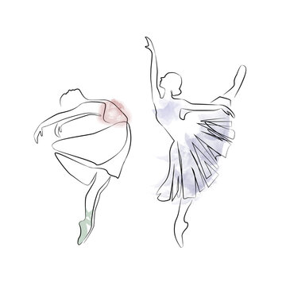

Saturdays as a Dancer
October 5, 2024 by Tara Henry

On a Saturday, all I do is dance. There is no time for work or play, just dance.
Last Saturday, I woke up at around 7am got ready and headed to the studio with the intention of a 10am video shoot.
But this shoot did not actually start until 12pm, as time was spent learning thedance for the photo shoot. Once shot, myself
and other dancers proceeded to technique class until about 3pm.
Once that class ended, another dance class begun where we learnt
choreography for our upcoming show. After having a short snack break, we proceeded with outr final rehearsal for the day at around
5pm running into the night time. It is at this time that fatigue has completely settled in and all that is left is a warm bath and
sleep. Therefore, we canclude that NOTHING but dance can be held on a Saturday!!
Computers, Science or Both?
October 7, 2024 by Tara Henry

Growing up Career day was just another dress-up day for me. There was no end goal,
just a dream or vision of a character I would play for that one day each year. Throughout
the years, this indecisiveness has only grown and planted itself within me. Thus, even now
I am battling between my path of study, whether it be Computer Science, or Physics. However,
the degree I am currently pursuing, "Electronics and Computer Science", is a perfect combination of them both.
This degree provides the practical aspect of Physics that consists of experiments and theories,
with the programming and problem solving of Computer Science. However, the indecisiveness still remains, as the
question can be posed of whether the degree to broad and in turn would lead me a stray. Well...There's only one way
to find out.